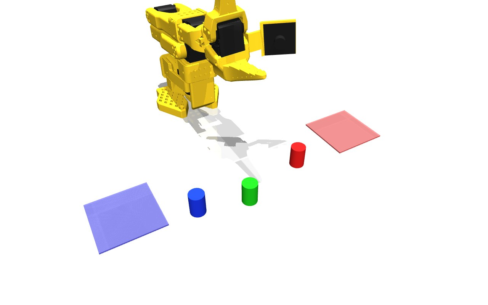
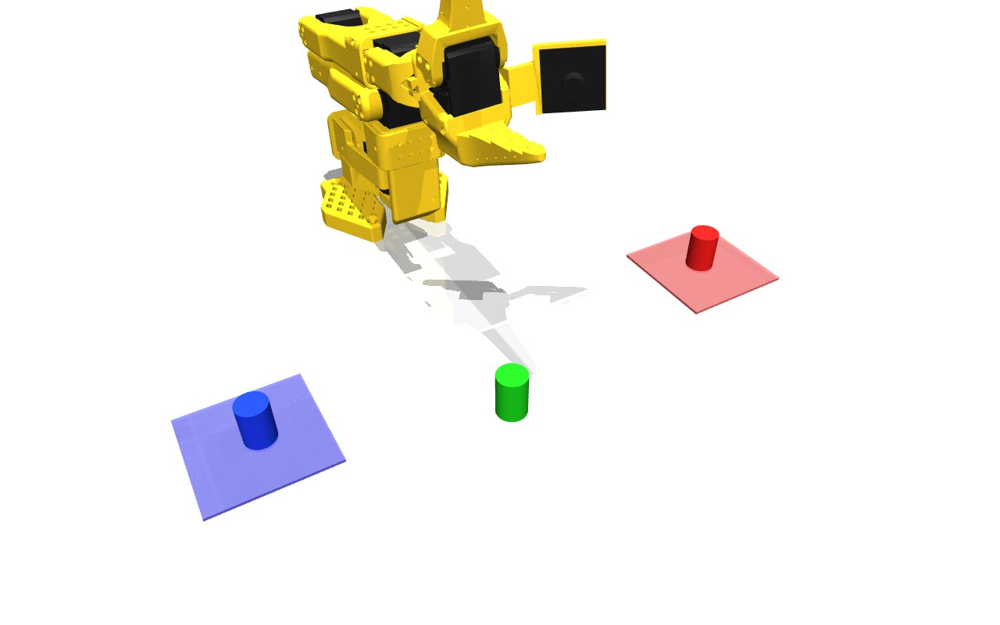
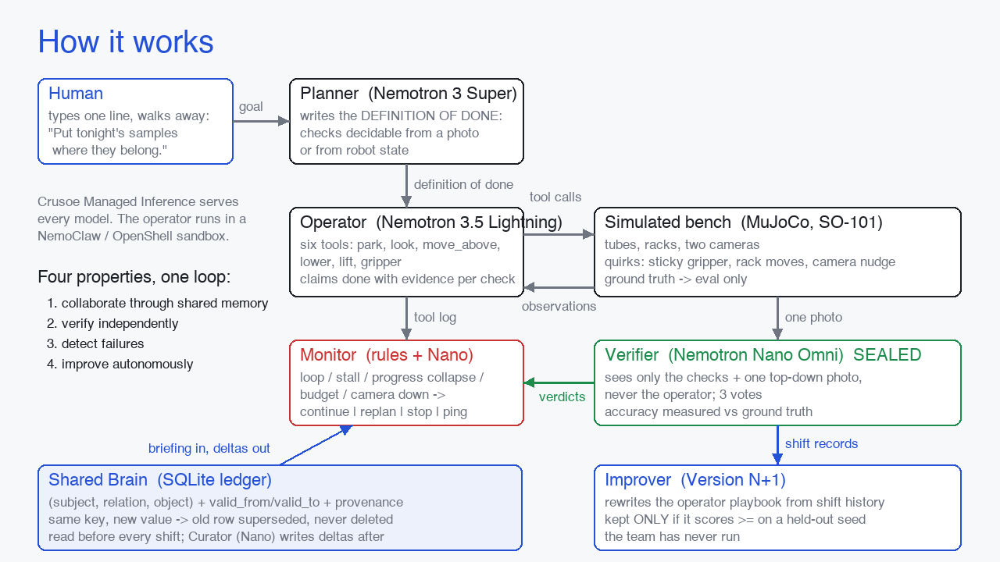
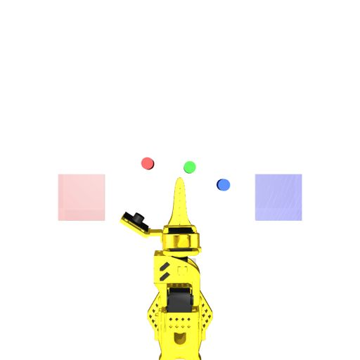
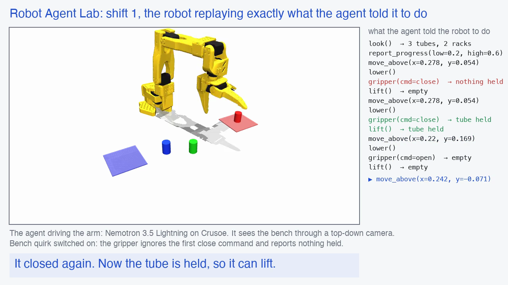
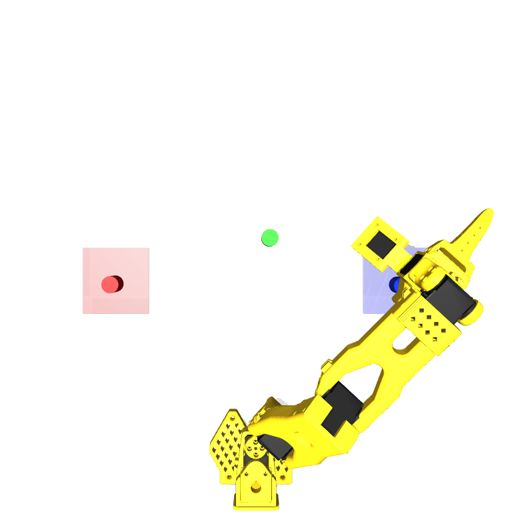
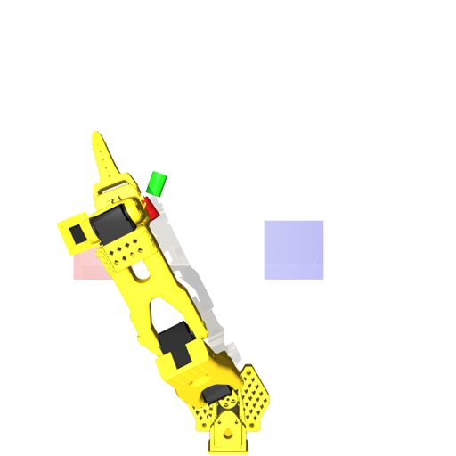

One typed line. A team of Nemotron agents sorts the samples on a simulated robot arm, checks its own work, and remembers across shifts.

Sample tubes arrive all day with coloured caps. Before the night runs, every tube has to be in the right place. A technician does this twice a night. A tube in the wrong rack ruins a run that costs more than the robot.
The human types "Put tonight's samples where they belong." and leaves. Everything after that is the agents' problem.

The middle section is the real simulator replaying shift two from the agent's own tool calls, including the sticky gripper and the retry.
Narrated. Every frame and number in it comes from the recorded runs in the repository.
Five agents, one loop. A planner writes the definition of done. An operator drives the arm. A checker that never talks to the operator judges one photo. A monitor decides when to stop. A curator writes the shift into shared memory.

Every shift reads a ledger of facts, procedures and lessons before it starts. A new value for the same fact replaces the old one and keeps its history. Nothing is deleted.

The checker sees only the list of checks and one top-down photo. It never sees what the operator said. Three times an operator claimed done with tubes still on the bench, and the checker said no every time.

A rule-based monitor watches the tool log for repeated actions, observe-only stalls, collapsing progress estimates, exhausted budgets and a dead camera. It decides: continue, re-plan, stop, or ping a human.
After a few shifts the team rewrites its own operator playbook. The new version is kept only if it scores at least as well on a shift it has never seen.
The gripper ignored the first close and reported nothing held. The operator lifted nothing, placed nothing, and declared the job done. The checker said no.

with memory, shift 1: passThe operator retried the close, confirmed the hold, racked both tubes and left the control alone. Every check passed, and the curator wrote the gripper lesson.

with memory, shift 3: rack movedThe blue rack was moved overnight. The memory replaced the old position the same shift and no agent was handed the stale one. The placement itself was not finished in time.
Four shifts with memory and four without, same starting positions, same models, same prompts. Everything scored against the simulator's ground truth.
| Metric | No memory | Shared memory |
|---|---|---|
| Tubes placed correctly | 1 of 4 | 1 of 4 |
| False "done" claims caught | 1 of 1 | 2 of 2 |
| Checker correct vs ground truth | 100% | 100% |
| Robot actions per shift | 34 | 39 |
| Stale rack positions handed out | n/a | 0 |
| Playbook rewrite kept on an unseen shift | yes: old score -61.5, new score -22.5 | |
Memory has not yet raised the success rate or cut the number of actions. The task is hard for a text operator working from camera coordinates, and the gripper quirk costs a retry every pick. What memory did do: the gripper lesson and the moved rack were recorded and never handed out stale.
Every model call, one endpoint. Per-role models so rate limits spread across them.
Super plans, Lightning operates, Nano monitors and curates, Nano Omni is the only agent that looks.
The operator is the one agent that executes generated motion, so it runs in a sandbox that can reach one host.
A researcher tool the planner can call when a tool error is outside the protocol. Results enter memory with a source and a date.